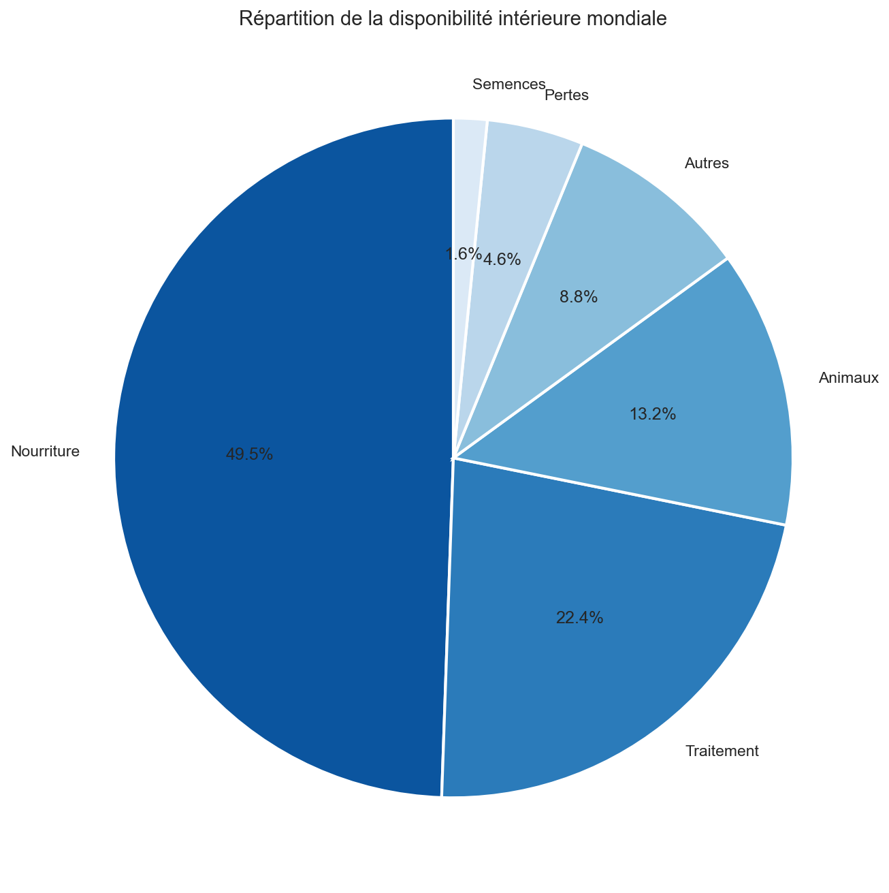
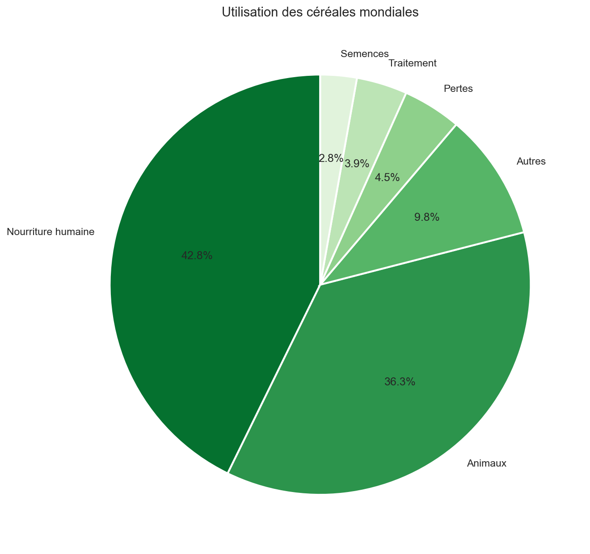
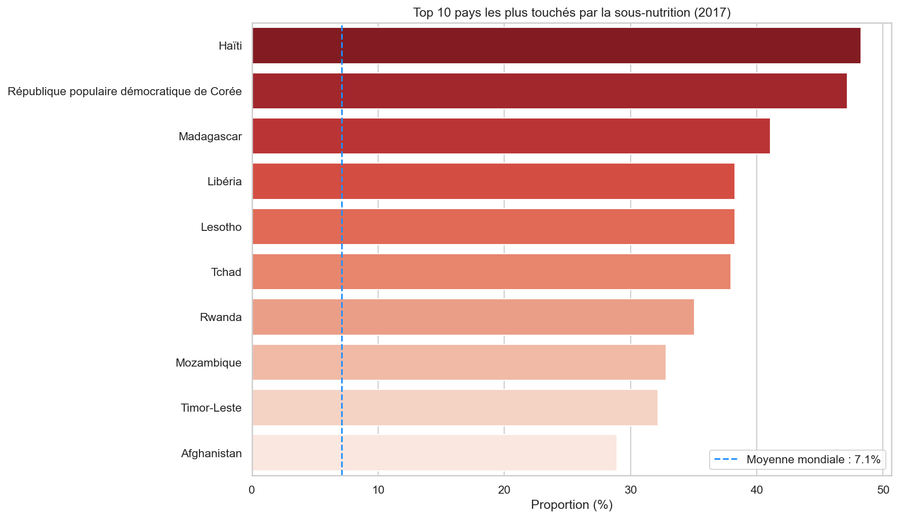
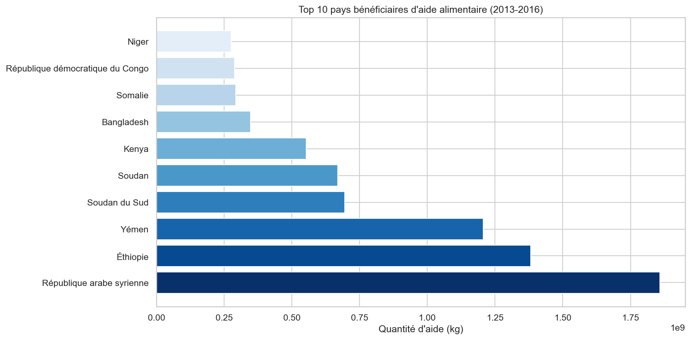
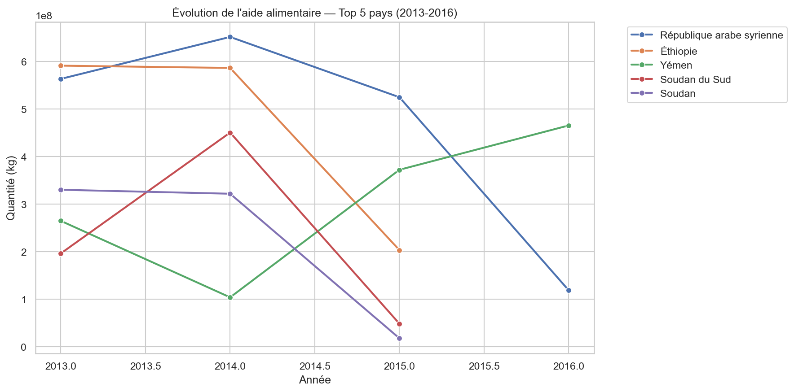
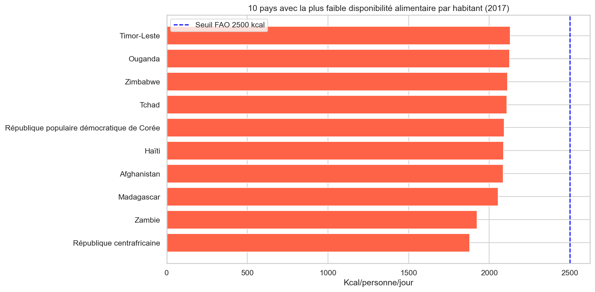
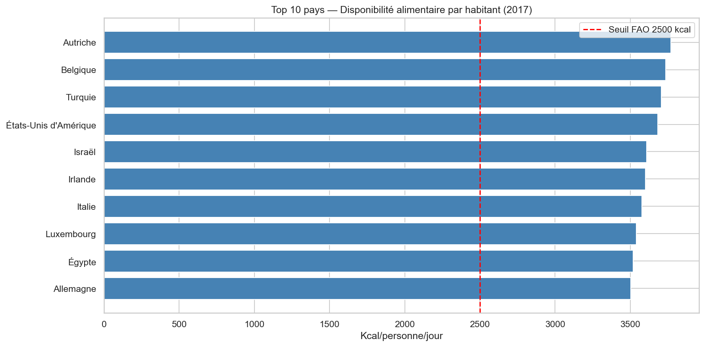

Organisation des Nations Unies pour l'alimentation et l'agriculture
01 / Contexte
4 datasets issus de FAOSTAT (données publiques)
Période couverte : 2013–2017.
Le filtrage 2017 est effectué via l'intervalle
2016-2018
disponible dans FAOSTAT.
02 / Méthodologie
Langage & Librairies
Visualisations produites
3.1 / Sous-nutrition mondiale
Base : 7,55 milliards d'habitants en 2017
3.2 / Capacité de production mondiale
Base : 2 500 kcal/personne/jour (seuil OMS/FAO)
La production alimentaire mondiale est suffisante pour nourrir 110% de la population mondiale. La famine n'est pas un problème de production.
3.3 / Alimentation végétale
En réorientant les végétaux vers la consommation humaine directe, 91,5% de la population mondiale pourrait être nourrie — sans aucun produit animal.
3.4 / Distribution alimentaire

3.5 / Utilisation des céréales
Presque autant de céréales vont aux animaux qu'aux humains. Réorienter une fraction de cette ressource couvrirait le déficit alimentaire mondial.

3.6 / Pays les plus touchés

3.7 / Aide alimentaire

3.8 / Dynamiques de l'aide

3.9 / Déficit calorique

3.10 / Surplus calorique

3.11 / Cas d'étude
Un pays produit massivement de la nourriture, l'exporte vers des marchés solvables, pendant qu'une partie de sa propre population ne dispose pas du minimum nutritionnel.
Conclusion
Source : FAOSTAT — Organisation des Nations Unies pour l'alimentation et l'agriculture · Données 2013–2017
Étude FAO · 2013–2017
Source : FAOSTAT — FAO · Données agrégées 2013–2017
Python · Pandas · Matplotlib · Seaborn · Plotly · Folium